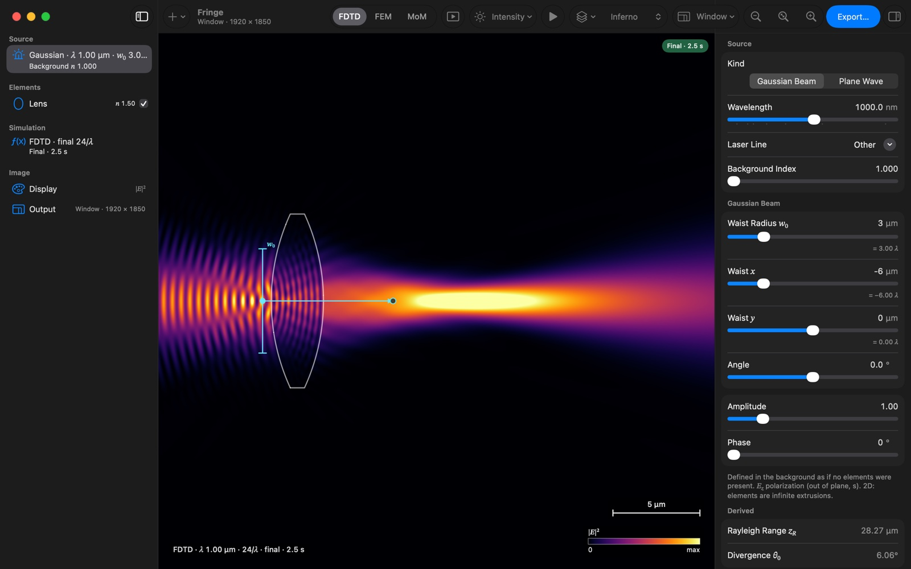

wave optics simulator for the mac
you place lenses, prisms, mirrors, slits, gratings or waveguides in a gaussian beam or a plane wave. fringe solves maxwell's equations on the 2d scene and shows the field.
^ a double slit, computed in your browser as a sum of huygens wavelets. it's a rough approximation; the app uses a full solver.

what's in it
- three solvers: fdtd, fem and mom. you can run the same scene with each and compare.
- sources: a gaussian beam or a plane wave, at any wavelength and angle.
- materials: a refractive index with absorption, or a perfect conductor.
- views: intensity, magnitude, real part and phase, and an animation over one optical cycle.
- export: png at any size, animation frames, and the complex field as numpy data.
- ten example scenes, including a nanojet, a talbot carpet and a slab waveguide.
why i made it
i use it to make cover images, so a few of the colormaps are picked for looks as much as for reading values.
install
brew install --cask lprsrts/tap/fringeor get the dmg from github releases. it's signed and notarized. a mac app store version isn't out yet.
needs macos 26 or later on apple silicon. free, open source (mit or apache 2.0), runs offline, collects no data (privacy). the command-line version: brew install lprsrts/tap/fringe-cli.
bugs
if something breaks or a result looks wrong, let me know.
— alper (@lprsrts)